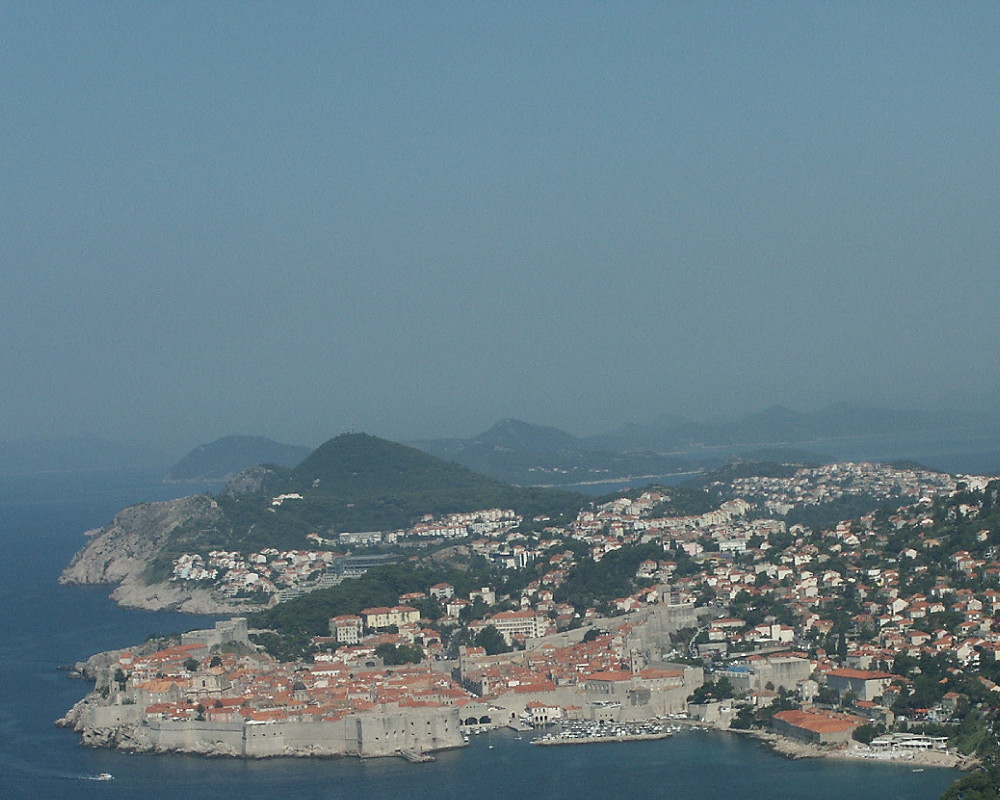

Johnnie and Oberta Baker's Photo Album Previous Gallery Next
|

Dubrovnik is an old city on the Adriatic Sea coast in the extreme south of Croatia. It is one of the most prominent tourist resorts of the Mediterranean, a seaport and the center of the Dubrovnik-Neretva county. Its population was 43,770 in 2001. Dubrovnik is nicknamed "Pearl of the Adriatic". |